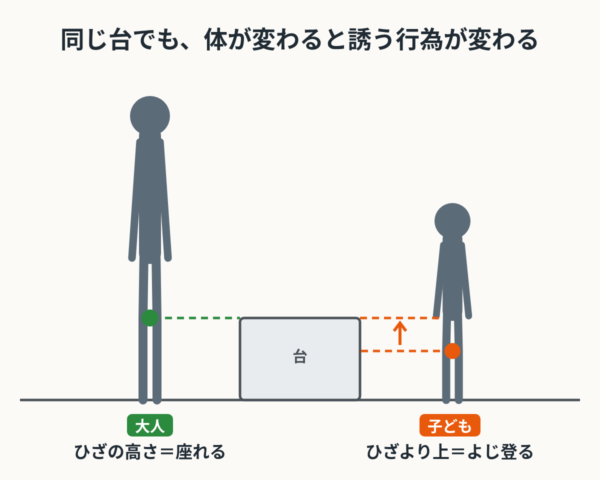
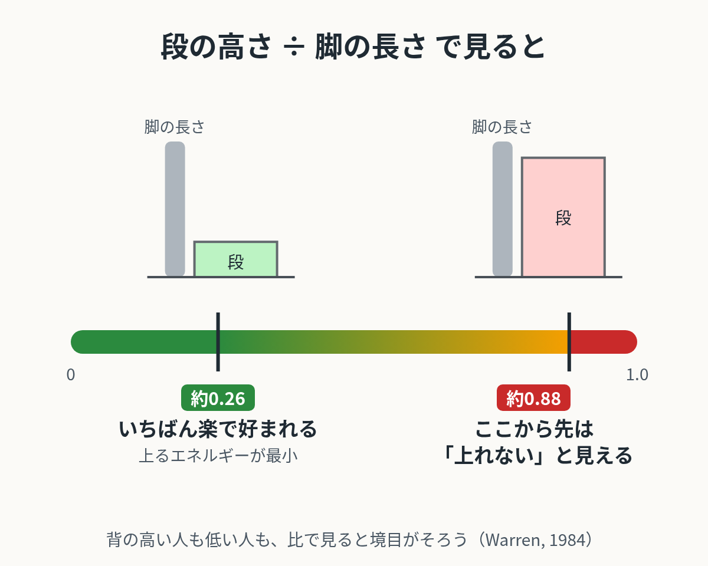

第6回 自然環境と身体
ひざの高さの台と、上れる段差（体の寸法で決まるアフォーダンス）


何がどう行為を誘っているか
ギブソンは、地面がほぼ水平で、平らで、十分に広く、硬ければ、その面は動物の体を「支える」ことをアフォードすると書きました。さらにその面がひざの高さにあれば「座れる」。岩の出っぱりでもソファでも、色や手ざわりは関係なく、座れる配置になっているかどうかで決まります。
大事なのは、ギブソン自身が「子どものひざの高さは大人のひざの高さと同じではない」と書いていることです。アフォーダンスはモノだけの性質ではなく、モノと体の関係で決まります。これがギブソン本来のアフォーダンスの考え方です。
ウォーレン（1984）は、これを階段で確かめました。段の高さを脚の長さで割った比がおよそ0.88を超えると「上れない」と見え、およそ0.26の段がいちばん好まれました。0.26は、上るときのエネルギーがもっとも少なくなる高さとも一致していました。背の低い人と高い人で、センチでは違っても、比で見ると境目がそろったのです。
惜しい例・悪い例との対比
大人の体だけを基準に決めた段差やカウンターは、子どもや車いすの人には「上れる」「届く」をアフォードしません。見た目は同じ段でも、体が変われば行為の可能性は消えてしまいます。
逆に、座らせるつもりのない植え込みの縁や低い塀でも、ひざの高さで平らなら人は座ります。作り手の意図ではなく体との関係で、アフォーダンスが生まれてしまう例です。座らせたくない場所で表面を傾けたり仕切りを付けたりするのは、この関係をわざと崩す、いわば反アフォーダンスの手法です。ただし、休みたい人まで締め出してしまう面もあります。
使いどころのひとこと
授業でアフォーダンスを説明するとき、「この段は上れる？」を「誰にとって？」と聞き直すと、ギブソンの関係的な見方がすぐ伝わります。研究や設計で寸法を語るときも、センチではなく「体の何倍か」で表すと、子ども・大人・車いすの人を同じ物差しで比べられます。